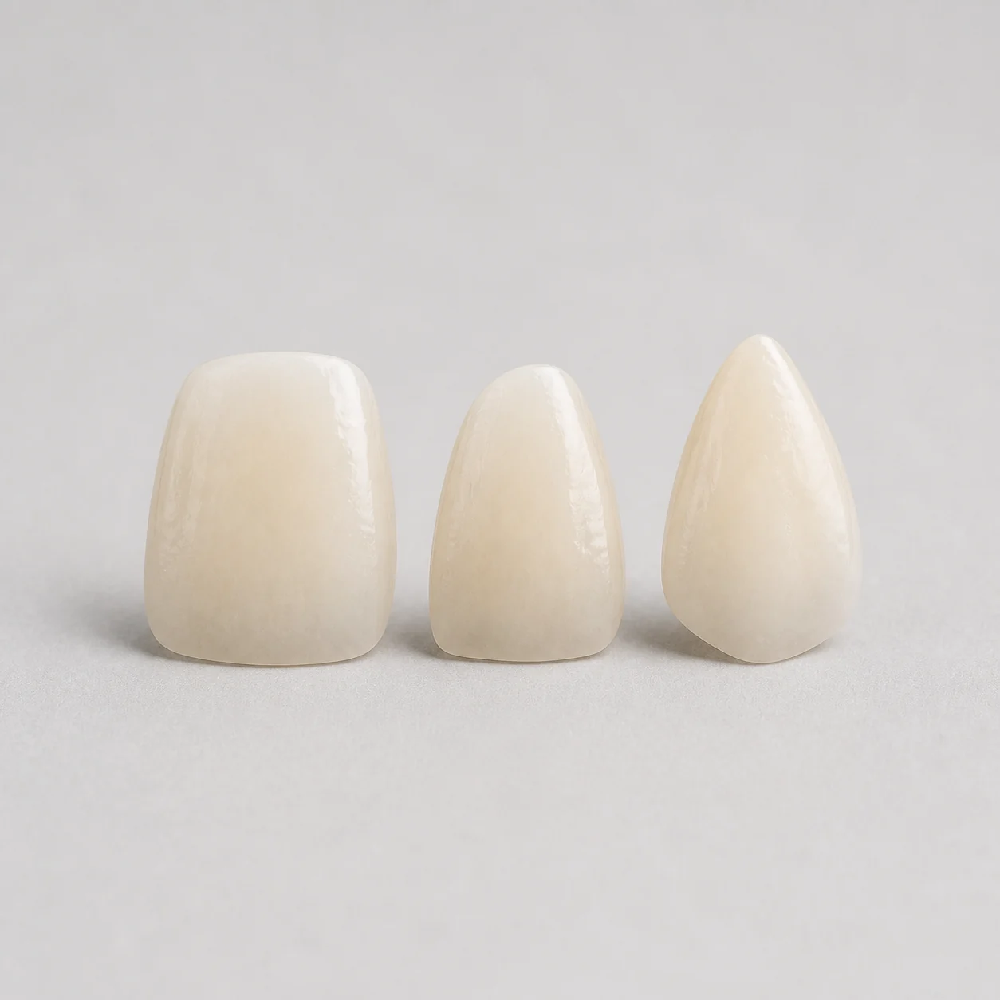

Zirconia, layered porcelain, E.max, or gold: an overview of our crown options

Our crown and veneer menu has four options. This is a plain-language overview of what each one is, to make the conversation with the lab easier. Material choice for a specific patient is a clinical decision, and we are glad to talk it through.
Full contour zirconia
A crown milled entirely from zirconia, with no layered ceramic on top. It is generally chosen where strength is the priority. Dental Concepts grew out of early zirconia milling work, so this is familiar ground for the team.
Layered porcelain
Ceramic built up in layers by hand over a core, which gives the ceramist more control over translucency and character. It is generally chosen where appearance is the priority.
Lithium disilicate (E.max)
A glass ceramic used for veneers, inlays, onlays, and crowns. On our RX form it is listed for veneers, onlays, and inlays as well as crowns.
Gold
A cast gold crown. If you prescribe one, the RX form asks which alloy you would like.
Not sure which to prescribe?
Contact the lab with the case details. For shade-critical cases, a custom shade appointment may help.